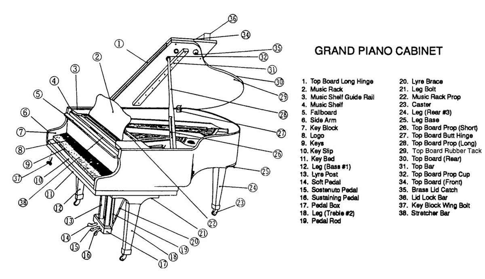

The Piano
The piano is a large wooden instrument that has a lot of versatility to play soloistic works as well as accompany other soloists. When accompanying other instruments, the piano usually plays the piano reduction, or a simplified version of the orchestra part for piano. The word piano is a short form of the word "pianoforte," which is in turn derived from the original Italian name for the instrument, gravicembalo col piano e forte. Literally harpsichord with soft and loud, this refers to the ability of the piano to produce notes at different volumes depending on how hard its keys are pressed. Pianos are descendants of the harpsichord, a baroque keyboard instrument. The piano is not normally a part of the orchestra, but many pieces call for it to be part of it. Orchestral works from the Baroque era often used harpsichords as continuo or the bass line. In modern orchestras, the piano can be used as a substitute for the harpsichord.
Jokes
Did you hear about the pianist who was banging his head on the piano keys?
He was playing by ear.